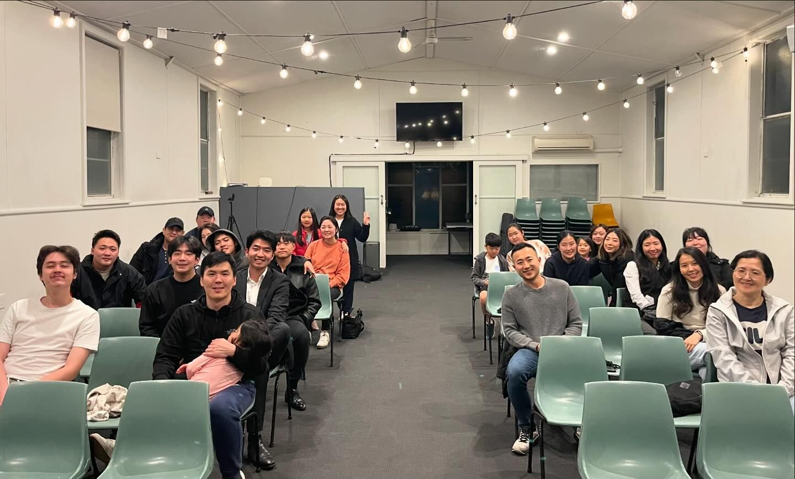

Our Ministries
Sunday Service
Our Sunday Services are a time for the entire congregation to come together in worship, prayer, and the study of God's Word. With inspiring music, thoughtful sermons, and a welcoming atmosphere, we seek to create a meaningful experience for all who attend, whether long-time members or first-time visitors.
11:00 am
Sunday School
Our Sunday School program is dedicated to nurturing the faith of our youngest members. Through age-appropriate lessons, activities, and discussions, we help children develop a strong foundation in Christian beliefs and values, fostering a lifelong relationship with God.
11:00 am
Prayer Ministry
Our Prayer Ministry is committed to supporting our church and community through the power of prayer. We offer regular prayer meetings, a prayer chain for urgent needs, and individual prayer support. We believe in the transformative power of prayer and its ability to bring comfort, healing, and guidance.
Tuesdays: 7:30pm
Mon-Sun:7:00 am
Life Groups

Our Life Groups are the heart of our community. These small groups meet regularly to study the Bible, share life experiences, and support one another in faith and daily life. Through Life Groups, we foster deep relationships and encourage spiritual growth in a more intimate setting.
Womens - 6:30 pm
Mens - 7:30 pm